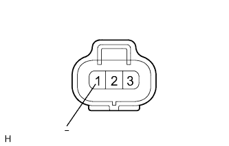
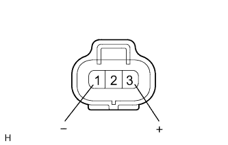
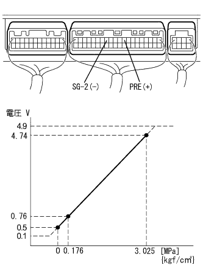

Air Conditioner Tube & Accessory Assembly On-vehicle Inspection |
| 1. Inspect Air Conditioner Tube & Accessory Assembly |
Inspect vehicle wire harness
Disconnect the pressure sensor connector.
 |
Using SST (Toyota electrical tester), measure the resistance of the vehicle side wire harness connector terminal of the pressure sensor.
| Tester Connection (Terminal Symbol) | Condition | Standard |
|---|---|---|
| 1 (-) - Body ground | Always | Below 1 Ω |
 |
Using SST (Toyota electrical tester), measure the voltage between the terminals of the vehicle side wire harness connector of the pressure sensor.
| Tester Connection (Terminal Symbol) | Condition | Standard |
|---|---|---|
| 3(+) - 1(-) | IG ON | 4.5 to 5.5V |
Inspect pressure sensor
Install the air conditioner tool set.
Connect the pressure sensor connector.
Start the engine and operate the air conditioner.
 |
Using SST (Toyota electrical tester), measure the voltage between the connector terminals of the air conditioner amplifier assembly. (For Terminals of ECU, see)
| Tester Connection (Terminal Symbol) | Condition | Standard |
|---|---|---|
| A9(PRE) - A13(SG-2) | Normal 0.196MPa{2.0kgf/cm2}-3.14MPa{32.0kgf/cm2} | 0.76 to 4.74V |
| Abnormal 0.196MPa{2.0kgf/cm2Below } | 0.76V or less | |
| Abnormal 3.14MPa{32.0kgf/cm2} or more | 4.74V or more |